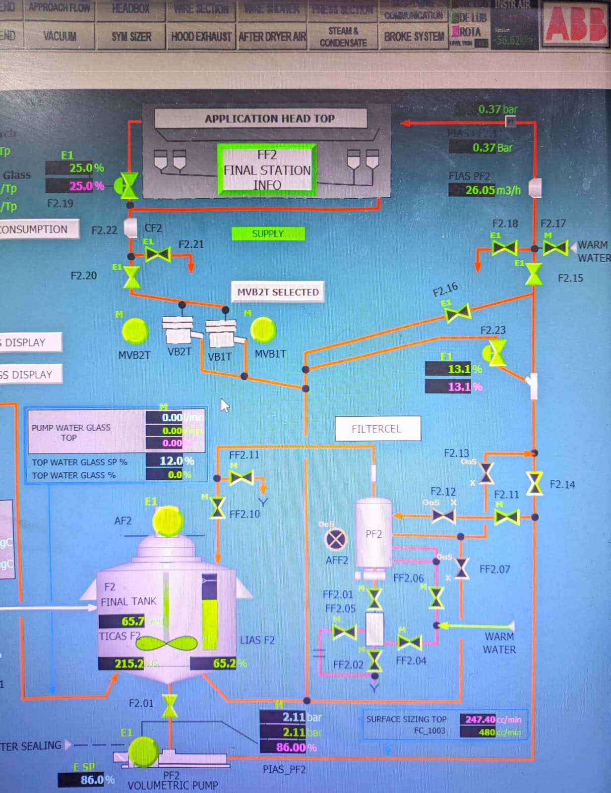
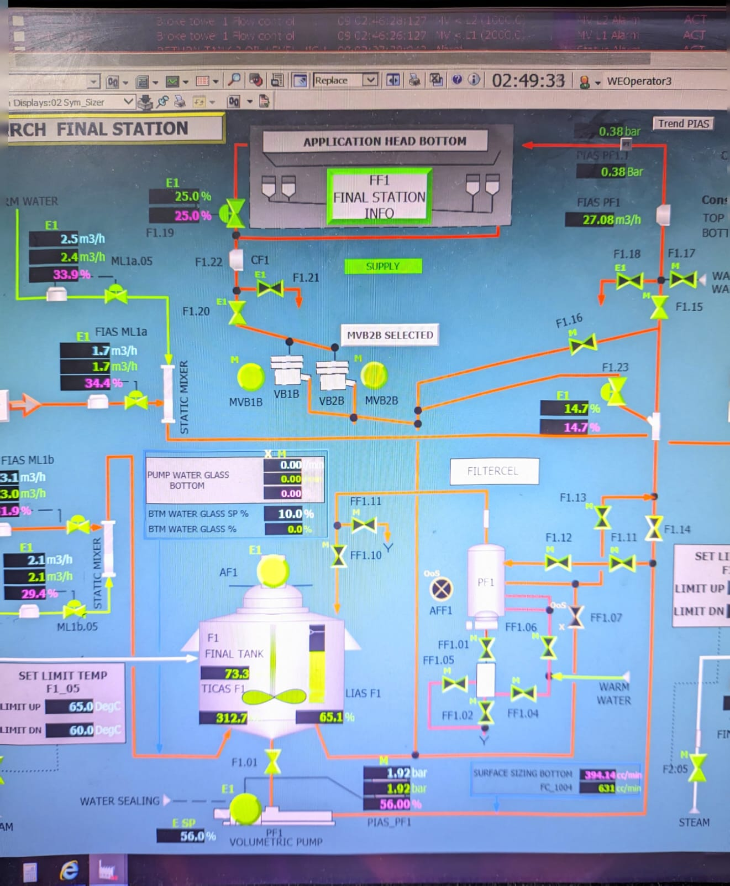

Starch Application – Injeksi ke Beam Sym-Sizer
Tahap akhir dari proses Starch Preparation adalah pengaplikasian starch ke permukaan kertas melalui sistem Beam Sym-Sizer. Di tahap ini, starch cair yang telah direaksikan akan disemprotkan secara presisi ke sisi atas (top) dan bawah (bottom) lembaran kertas untuk meningkatkan kekuatan permukaan dan sifat cetak.
Proses injeksi ini dikontrol melalui sistem DCS, termasuk pemantauan flow rate starch, suhu, serta tekanan injeksi ke Sizer Roll. Kontrol terpisah untuk sisi atas dan bawah memungkinkan penyesuaian sesuai spesifikasi produk.

Gambar 1: Injeksi starch ke permukaan atas lembaran kertas (top sizer)

Gambar 2: Injeksi starch ke permukaan bawah lembaran kertas (bottom sizer)
×